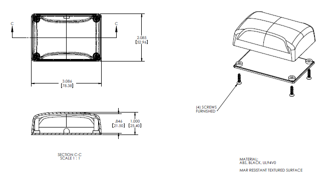

June 24, 2011
On June 22 I noticed that plugging
additional sensors into the labquest mini has an effect on the USB
voltage. It may be far better to have an indepentent supply
for the sensor since the source voltage is included in the calibration
equation.
Vout = Vs ( (0.018) P + 0.5)
We could possibly use the following addaptor to power the
sensor box rather than using the USB supplied voltage:
http://products.cui.com/CUI_EPS050100_Datasheet.pdf?fileID=2447
note: efficency mark V see
http://www.energystar.gov/ia/partners/prod_development/revisions/downloads/International_Efficiency_Marking_Protocol.pdf

I attached the labpro to a laptop and measured the same voltage from
the sensor port when loaded with a pressure sensor as I had measured on
a desktop computer.
- It appears that the voltage is dependent on what is connected
to the analog sensor ports of the LabQuest Mini
- It does not appear to be different on different computers.
"The specification provides for no more than
5.25 V and no less than 4.75 V (5 V±5%) between the
positive and negative bus power lines. For USB 2.0 the voltage supplied
by low-powered hub ports is 4.4–5.25 V."
See http://en.wikipedia.org/wiki/Universal_Serial_Bus#Power
At the sensor port I am actually measuring a bit more than 5.265 if no
sensors are connected to the analog sensor ports (attaching a flash
drive to the USB does not seem to change this). This voltage jumps to
5.353 if the Labquest voltage adaptor is attached (and drops back down
to 5.341 if the pressure sensor is attached).
I do not know if the sensor supply will be the same for each Labquest
or if it will be different from one to the next but the as I make more
measurments in more configurations I believe I am seeing consistancy
and I am gaining some confidence this will be the same for all labquest
mini's.
It is possible that the Labquest Mini contains some
sort of boost
converter to supply the Vs to the analog outputs (I am starting to
doubt this as I try more combinations).
That would explain why I measured essntially the same value when
attached to different computers.
If the power adaptor is connected to the Labquest Mini but the computer
is powered down the sensor voltage remains at 0 volts. The
voltage jumps to the 5.341 volt value during the boot sequence before
the login screen is shown but after the first windows welcome screen.
In investigating the Vs (source voltage to the sensor) I discovered
that the
Vernier voltage probe gave a reading that differed
from a multimeter by about 1%. I tested all four Fluke117's and two
other types of digital meters and measured essentially the same reading
on them all. It appears that the error is in the LabQuest mini itself
(this may differ from Labquest to Labquest but I have only one to test
so far). The default slope for the plus/minus 10V input is 1 and the
default intercept is 0.
This difference can be fixed by calibrating
the voltage probe to the Fluke117 (using a two point calibration). The
calibration can be saved in a configuration file. I suspect each
Labquest mini may need a different calibration to if they are all to
closely match the Fluke (I am purchasing the "calibrated" version of
the fluke117).
The 0-5 volt input does not have this issue. It is giving
the same reading as the fluke (some variation in the LS digit -- but
there are four digits). I suspect the signal conditioning is the issue.
The Labquest mini has different inputs for the two different voltage
ranges (conductor 1 for 0-5V and conductor 6 for -10 to +10V). I'm
guessing the
-10 to +10 volt range is divided and shifted
internally and fed to the same 0-5 volt ADC. It appears the loss of
precision is in the signal condictioning and not in the ADC.
June 22, 2011
Calibration Procedure
Tested a sensor mounted in a box and new (better) calibration procedure.
This photo shows the sensor box mounted
above the air trap.
Only two short pieces of rubber hose are required (they will need
periodic replacment I expect).

For sensor calibration I used the equation
provided by the sensor manufacturer.
Vout = Vs ( (0.018) P + 0.5) +or- ERROR
On the plot provided on the datasheet it appears
that the most significant variation from sensor to sensor is the zero
offset.
from page 4 of
http://www.freescale.com/files/sensors/doc/data_sheet/MPXV7025.pdf
Today with this sensor I found Vout at
P =
0 to be 2.640 V
so I rewrote the equation as
Vout = Vs (0.018) P +2.640
I also measured Vs (a nominal value of 5V was expected)
When this photo was taken the sensor was plugged into ch1 and the extra
probe was plugged into ch2 of the LabQuest mini
This voltage may be a bit different on each computer (and it may change
depending on the USB devices attached). This is the voltage supplied
over the USB cable!
The equation becomes
Vout = 5.252 (0.018) P + 2.640
solving for P
P = 10.58 Vout - 27.93
I filled the water column tube to a hight of
160.2 cm
and read a potential of
4.123 Volts
using the calibration equation that works out to
15.69 kPa
I did a simple look up of a
web pressure
conversion calculator
and found good agreement
It is possible to enter the calibration equation into logger pro:
June 10, 2011
added new
photo
of table clamp as I realized we could use two fewer parts than I
had shown before.
June 7, 2011
New raw data. Used apparatus with air
trap. This is what I was looking for in data linear down to zero head
of water.
| Table 1 |
Water Head
Pressure |
|
|
| Height of Water Column above Static Pressure Port (cm) |
Sensor
Potential (V) |
| Identify your printout! Names here. |
| X |
dX |
Y |
dY |
| 0 |
|
2.642 |
|
| 4 |
|
2.679 |
|
| 9.3 |
|
2.727 |
|
| 20 |
|
2.825 |
|
| 38.4 |
|
2.998 |
|
| 49.7 |
|
3.103 |
|
| 61.8 |
|
3.216 |
|
| 81.4 |
|
3.396 |
|
| 95.5 |
|
3.527 |
|
| 111.2 |
|
3.673 |
|
| 124.8 |
|
3.797 |
|
| 132.3 |
|
3.866 |
|
| 140.2 |
|
3.94 |
|
| 150 |
|
4.03 |
|
| 160.9 |
|
4.132 |
|
I did not record the water temperature when this
data was taken. For good calibration data the experiment should be
repeated with the water temperature recoded. Once a trend line is
recorded and the water temperature is know one could look up the
density of water and use that and the height column to calculate a
pressure column (it becomes essentially a unit conversion for a given
density). Darryl is talking about also using salt water with a
different density.
I expect the slope and intercept to be a bit different for each sensor
but I expect them to be consistent from day to day. This should be
checked. I will be putting tag numbers on the sensor boxes so that they
can be identified.
The air trap connected to the
water column and sensor. Taping the ruler
onto the air trap was an afterthought. This keeps the sensor tube from
getting any kinks. This is just a prototype. I will add a vertical
piece of Plexiglas to the final apparatus and the sensor is going into
a small box. In this first image the apparatus was on the bench top.
The apparatus was moved to the floor. Image from a different angle.
The suggested labels given to the parts here
should aid in discussion and procedure instructions.
For example I can now say:
- the height of the static pressure port on the air trap should
be at the same height as the static pressure port on the water column.
- The height of the center of the static pressure port on the
water column is taken as the zero in height.
- The air pressure at the sensor is the same as the static
water pressure at the static pressure tube.
- There will be some water entering the Air Trap as the height
of water increases in the water column because the air in the air trap
is compressed as the static pressure at the static pressure port
increases. The air trap is 1.5" by 1.5" at the bottom and only 1"
height. This is large enough to ensure the water level in the air trap
does not go significantly above the static pressure port and avoids a
pressure offset. The static pressure tube is horizontal which means the
pressure will always be the same at both ends. The sensor tube is
vertical but never has any water in it. The air pressure in the air
trap and along the sensor tube will be the same at all points.
On older posts, before there was an air trap, the sensor tube and the
static pressure tube were the same thing. Since it was a vertical tube
attached to a 90 deg port fitting the pressure was not the same at the
old static pressure port and the sensor. This could be compensated for
in calibration but the fitting at the static pressure port had both a
small horizontal part and a small vertical part. This made it
impossible to do a simple calibration compensation that would work all
the way down to zero gauge pressure. Water would first enter the
horizontal part of the tube and the pressure would stay constant. Once
the water stated to move up the vertical part of the fitting the
pressure would be less at the air water interface than at the elbow.
Now the calibration compensation is not needed because the water air
interface remains at the static pressure port elevation.
The sensor needs to be above the water sensor interface because the
sensor data-sheet stipulates that only dry air enter the sensor body.
Using the Universal table clamp we can
avoid getting a large bulky
retort stand. Also, by putting the bottom of the tube on the floor the
top of the 6' tube is still within reach for filling.
(image added June 10 when I relized we could
use fewer parts this way)
The sensor and 1/8" rubber tubing will be put into a small project box.
On the outside of the box I will have a fitting for the red tubing.
June 3, 2011
I had added two fittings to the custom
sensor
reservoir prototype (air trap). The box has inner dimensions of 1.5 x
1.5 x 1 inch. Fittings are just lengths of 1/4" copper tubing.
I'm expecting little water to enter the box so I think it will be more
appropriate to call it an air trap rather than a reservoir. The purpose
is to ensure there is very little change in water level on the sensor
side so that the air pressure will be the same as the water pressure at
the level the pressure tube is inserted into the column.
Used Lapage 11 Regular Epoxy to seal fittings in
place.
May 31, 2011
Received call that the custom sensor
reservoir prototype is ready for pick-up. I'll pick it up on the way
into work tomorrow morning.
May 27, 2011
The raw data I collected on the 26th (and
plot) can be seen here =>
raw data (more
data taken on the 27th
raw data 02)
As shown in the May 26th entries I
altered the apparatus so that the
sensor tube is attached to a fitting that has been fixed in a hole on
the side of the apparatus near the bottom.
For this run I avoided doing a two point calibration in logger pro.
Instead I took raw data of sensor voltage and water head level and
plotted that in Excel. The result was clearly linear with very little
scatter in the data.
I started with the tube nearly full.
- For each water level I placed a piece of masking tape at the
water level. The top of the tape was aligned with the top of the water.
- Water was removed from the apparatus with a siphon tube. I
simply pinched of the siphon tube by folding it when I wanted to stop
the flow (like one might do with a garden hose). Note that in hindsight
I see that it would have been easier to just add some water for each
level.
- Once the water level had dropped around 10 cm I placed
another
piece of tape to mark that level. I did not go any lower than 26.2 cm
because I was avoiding parallax as much as possible and I can only
easily get so low. I image the students could easily get down lower. I
should perhaps have taken a reading with no water but at the time I was
thinking that could lead to inconsistent results.
- The sensor voltage was recorded with loggerpro. I held the
siphon tube pinched (and the water level steady) long enough so that
the voltage would be clearly distinguishable in the logger pro plot. (I
had not thought of that at first so the first two levels don't appear
in the logger pro plot shown below -- I had written those levels down).
When Logger pro is running one can simply move the mouse to any place
in the window and obtain the voltage from the value in the lower left
corner. In this photo of the computer screen for example one can see
the mouse is located at 2.870 volts (in this image the mouse cursor
appears in the lower right part of the screen as cross hairs).
- After tape markers were in place for each level I removed the
remaining water from the apparatus and put it down horizontally on the
bench top to ease the distance measurements. A tape measure was taped
to the apparatus with masking tape (the zero end of the masking tape
was aligned with the top of the sensor tube). The position of the top
of each piece of tape was recorded.
I am thinking of purchasing an adhesive metric scale that can attach to
the tube permanently.
Rather than purchase retort stands for Langley I would rather get
clamps that would fit the edge of the bench (if possible) since they
would take less storage space and their would be less bulk to bring out
and put away for the lab. It would be a good idea to have a drain tube
attached near the bottom of the apparatus to avoid having to dump the
water out (and possibly get the computer wet). I think we could use a
simple hose clamp to avoid flow during the experiment (different clamps
are shown in the May 26th entry).
Perhaps I should also get a spirit level to make it easy to get the
apparatus vertical.
I took some more data today. The points
taken today corresponded well
with those taken on the 26th as long as:
- I made sure the sensor tube was straight along the side of
the apparatus
- I did not include 0 mm. It appears that the value at 0 is
offset. I will give that more thought but I'm guessing it has to do
with the configuration of the sensor tube and fitting. The sensor tube
fitting is an elbow. I expect air gets trapped in the elbow. As the
pressure increases and the air is compressed the water would first move
horizontally and then vertically up the fitting and into the tube. I am
wondering
if the sensor tube configuration were changed if it would then give a
linear result down to 0 mm.
I am thinking I really should add a reservoir as it would virtually
eliminate changes in water level within the sensor tube configuration.
I expect this would make a small change in the slope of the graph.
The measuring tape attached to the apparatus made using bits of tape to
mark the water level unnecessary.
| Head |
Potential |
| 163.7 |
3.873 |
| 155.2 |
3.812 |
| 145.8 |
3.744 |
| 136.6 |
3.679 |
| 124.4 |
3.586 |
| 113.8 |
3.509 |
| 105.3 |
3.447 |
| 97.4 |
3.386 |
| 90.2 |
3.336 |
| 75.9 |
3.23 |
| 63.8 |
3.142 |
| 52.2 |
3.056 |
| 41.5 |
2.981 |
| 26.2 |
2.87 |
|
| 27th #2 |
|
| Head |
Potential |
0 |
2.641 |
| 59.2 |
3.104 |
| 118.3 |
3.537 |
| 137.1 |
3.676 |
| 160 |
3.844 |
|
I have removed the copper elbow at the bottom of the apparatus and will
put in a strait piece of copper to act a fitting. I will see if I can
find a good container to use as a reservoir.
May 26, 2011
On the 25th Darryl and I discussed
changing the design of the apparatus so that the sensor tube would be
attached to the water column via a fitting placed in a hole in the
Plexiglas tube side near the bottom. I had thought of this originally
but opted for the other setup initially to get some testing done
quickly.
After taking some data carefully I found it was
quite linear. (rev. May 27, 2011)
I was also thinking we could possibly
improve the
apparatus by using a sensor reservoir rather than a long sensor tube.
It might also aid calibration if we add a drain valve. I'm thinking
that if the water level on the sensor side is stay very close to the
level of the sensor hole the air pressure in the sensor side will be as
close as possible to the static pressure at the sensor hole. On the
other hand if water goes up the sensor tube as the air compresses we
can compensate for this with the calibration but the
compensation would
only be linear to the extent that the air is acting as an idea gas. If
we
have
a
wide
low
closed
reservoir
then
the
change
of
water
level
will
be
minimal. Alternatively one could
raise or lower the reservoir so that the top of the water in the
reservoir is aligned with the top of the static pressure tube ensuring
the pressure at the sensor is precisely the same as the pressure at the
top of the horizontal static pressure tube fitting. I
guess I am thinking adjusting the error pressure just using calibration
(and not by minimizing the change in water level on the sensor side)
could be seen as hand waving rather than physics.
concept
During the calibration procedure it may be a good
idea to not calibrate to 0 but to do the calibration from a small
finite value so that air never enters or leaves the static pressure
tube for the duration of the experiment. It might also be a good idea
to have an empty hole near the top of the tube so that there could be
consistent calibration points.
I am considering getting some Metric Adhesive tape and attaching it to
the tube for the scale.
The tape 0 should be aligned with the top of the horizontal sensor tube
fitting since air in the senor tube/reservoir will not compress before
the horizontal fitting is completely full.
May 25, 2011
On May 24 I showed Darryl the equipment
that I had thrown together for testing and we ran through a quick
calibration. He suggested that the sensor board be put in a box.
On the way into work today I was thinking about the calibration
procedure. There two things that could be done to improve the
resolution in the static pressure calibration.
- Measure the head of water in mm rather than inches. I had
been measuring in inches since inches of water is a common unit of
pressure (just like mm of mercury). The down side of this is that I
often tend to read to the closest quarter inch and we could do better
than that. Reading in meters, cm or mm would tend to help one read to
the closest mm. The actual measurement might be plus or minus a few mm.
- I could added a little op amp circuit in the sensor box to
set a rough zero and span with analog electronics before the Analog to
digital conversion in the labquest mini. [decided to not add the extra
signal conditioning circuit for this sensor -- at least not this year]
Item 2 above would probably give us a better calibration lab anyway.
The box would contain two trim pots (access with a trimming tool
through small holes). The students would adjust the zero trim to get
somewhere between 0.25 and 0.5 volts with the sensor tube out of the
water. They then would put the sensor tube in the water to about the
full depth and adjust the span (or gain) trim to get an output of about
4.5 to 4.75 volts. This would ensure that most of the 0 to 5 volt input
raw voltage range is used. The students would then do the fine
calibration digitally with the computer as before.
Note only would we better utilize the ADC in the lab quest mini and get
better resolution but many of the calibrations the students might do in
other course lab work might involve adjusting trim pots. Later in the
term when the students do the lab that involves voltage dividers they
could learn what the trim pots are actually doing.
Alternately I could just do the rough analog adjustment once and leave
it since it does not need to be precise. It simply puts the sensor
output in a good range for the ADC.
I was also wondering then if it might be a good idea to put the sensor
in one box and the op amp circuit and Analog cable end in another. Each
box could have three screw terminals so the boxes could be cabled
together. This way we would have a sensor box, a signal conditioning
box (rough calibration) and an analog to digital converter with USB
interface box (the Labquest mini). I think having these separate could
be somewhat instructive to the students as to the basic block
components of a data acquisition system. These elements are essentially
common to all systems although they may or may not be in separate boxes
in different systems. In fact our sensor does have some signal
conditioning already built in; it has a preamplifier and temperature
compensation all built into the one small package.
As for boxes I was looking through digikey for a plastic box similar in
size and shape to the one Vernier uses for there Barometer sensor.
From
http://www.budind.com/pdf/hb11850PXX.pdf
Note I have re-sized the image so it is no longer 1:1 scale. Print the
PDF file to get a 1:1 scale as shown on drawing.

If we decide that signal conditioning would be a good idea I think the
LMC5484IN-ND would be a good choice of operational Amplifier. I
would wire it up on protoboard and put it in the box. either in the
same box as the sensor or perhaps a separate box for signal
conditioning.I have some of these op amps already as I have been
considering using them for another project.
see
http://www.national.com/ds/LM/LMC6484.pdf
I
did a measurement of the voltages coming off the sensor for the full
depth of the water column and for the sensor hose in air.
sensor hose in air
|
2.56 volts
|
max head of water
|
3.8 volts
|
It appears the resolution could be improved by
a factor of about 2.5. This may not be enough to warrant the time it
would take to construct the amplifiers. I think what this summer I
will mount the sensors in boxes without extra signal conditioning. We
can review the lab after the first run and decide if adding the
amplifier would be warranted.
May 17, 2011
Today I mounted the sensor, attached a Plexiglas
flat bottom to a Plexiglas tube and experimented with the sensor tube
arrangement using stuff I had on hand. This could be refined.
The sensor ( see
http://www.freescale.com/files/sensors/doc/data_sheet/MPXV7025.pdf
)
Raw Voltage into breadboard probe. The sensor can
measure both positive and negative pressures. It uses a 0 to 5 volt
supply with 0 differential pressure giving about half the total span.
- Since we don't really care what the voltage from the sensor
is but would like to know the static pressure in inches of water I
thought it best to use this probe and manually set it up. The
calibration method is shown a few images down (two point calibration).
- This also allows me to power the sensor from the labquest
mini
which is powered from the USB.
Other end of probe wire goes into LabQuest Mini.
In this case Ch3 was used.
Set up of top of water column and sensor.
Bottom of Water Column. I was not sure if my
Plexiglas weld would hold so I put the bottom in a bucket.
Close up of end of Sensor Tube (taped onto rod to
hold straighter).
Calibration
- The sensor tube was taken out of the water for reading 1 (0
inch)
- The sensor tube was lowered into the water for the Reading 2
(I measured it at 29.25 inch from top of water to bottom of tube)
I would recommend using full depth for the calibration but since I was
alone it is difficult to hold both ends of the measuring tape so I used
a shorter distance.
I then pushed the tube in the rest of the way which I measured as about
58 inches. Note my measurements were quick just to see if things seemed
to be working.
Histogram (2000 samples taken at 1000
sample/second)